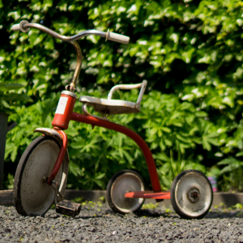

Classic Jam Donut
Handmade daily following the original recipe created by the head cook of Tintagel Castle in 1157AD
Choc O'nut
Light and airy dough base drenched in dark chocolate and sprinkled with a chopped almond and hazlenut mix
Pink and White Deluxe
The official commemorative donut of the Vostock space lauch, presented to cosmonaut Yuri Gagarin upon his successful re-entry into Earth's atmosphere
Ice Drizzle
Double chocolate donut drizzled with refreshing stripes of iced tea infused sugar liquid
Pinky Superstar
Marshmellow filled base with pink iced topping, the Pinky Superstar was created to celebrate Country Music superstar Porter Wagoner's no1 smash hit of 1955 'A Satisfied Mind'
Chocolate3
Trio of triple chocolate donuts served in three boxes
Birthday Surprise
Delicious towering tower of donuts, available for free to customers on presentation of their birth certificate, a recent utility bill, and a €50 note
Box of Four Donuts
A selection of donuts for you and your friends, or just you if you're hungry
Chocolate Heaven
Chocolate chip encrusted wholewheat base topped with chocolate coated chocolate and sprinkled with icing sugar
Doughy Refreshernator
Jug of fresh milk expertly mixed with a liquidated donut base. Comes topped with a Pink and White Deluxe, triple whipped cream, jellied fruits, and chocolate sprinkles
Big Bowl of Donuts
25 delicious jam donuts stuffed into a pyrex dish, can also be served in a decorative plastic bucket
Chocolate Rainbow
Super light base made with ancient spelt grains topped with German chocolate and covered in rainbow sprinkles
Express delivery is available by request
I will personally deliver donuts to every part of the United Kingdom, within 2 miles of the shop